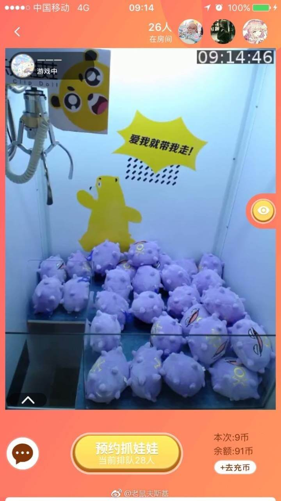
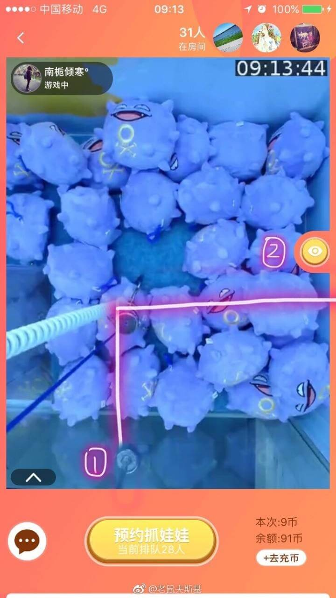

首先我们要介绍的是这个app！它的抓取角度分为正视图和顶视图，对很多人来说少了侧视图，前后关系不好控制，但是其实顶视图是万能的！
这是正视图
这是顶视图
大多数人都是结合两个视图一起看来分析位置的，但是事实上按普通的方法看顶视图的视觉差特别大～
昨天试了很久，我要说的方法很简单，只要一个顶视图就可以了～重点就是要注意观察别人夹的时候顶视图的情况，具体看下图【举个例子，这台是小怪物瓦斯3号机】
别人下爪时，观察好爪子中心下落在整个画面的哪个位置，图中这个发光点就是这台机器爪子的中心位置，一定保证自己要夹的娃娃重心在这个位置！
如果不放心我们就再看一个人~
第二次下爪，基本上还是那个位置，在画面偏左下方的位置。
这个时候可以用胶带或者水性笔在手机屏幕上做个记号【事后能擦掉就行】【手动开挂2333】记性好的同学肉眼就可以记住了～
接下来自己玩的时候，就要把想夹的娃娃挪到镜头中的那个点上，全过程只要看顶视图，没有特殊情况【夹子会旋转等】只要对准了90%都是能抓住的，但是抓住不代表能提起来。。。【除了某些很贴边的娃娃，因为真的够不到啊！】剩下的就是抓力强不强的问题了～
从图片可以看出来这台机器的抓力大概是十几分钟强一次，具体哪次我就说不准了只能自己把握了。。。
而且每台机器这个重心点的位置也不一样，大家想夹哪台就按上面的方法观察。如果肉眼记不住我们可以参考app边框或者镜头中的物品的位置关系，比如
1处有一个柱子，2处是app切换视角的按钮，我们要夹的娃娃大概就在2偏下1正对的位置，那么这个位置如果有娃娃就可以下爪～
最后，这个app存在闪退的问题，如果正在抓取的时候碰到不能切换视角的问题，我是马上退出房间再重新进去就行了【你的位置会保留，但是还在计时】
闪退的话马上重新打开app进入房间也可以继续玩，30秒时间，不是太卡的手机还是能续一下的。。。
好了废话比较多，怎么瞄准基本上说完了，通用的抓娃娃技巧我就不说了～这是我的邀请码～小赌怡情大赌伤身。。祝大家玩的开心～